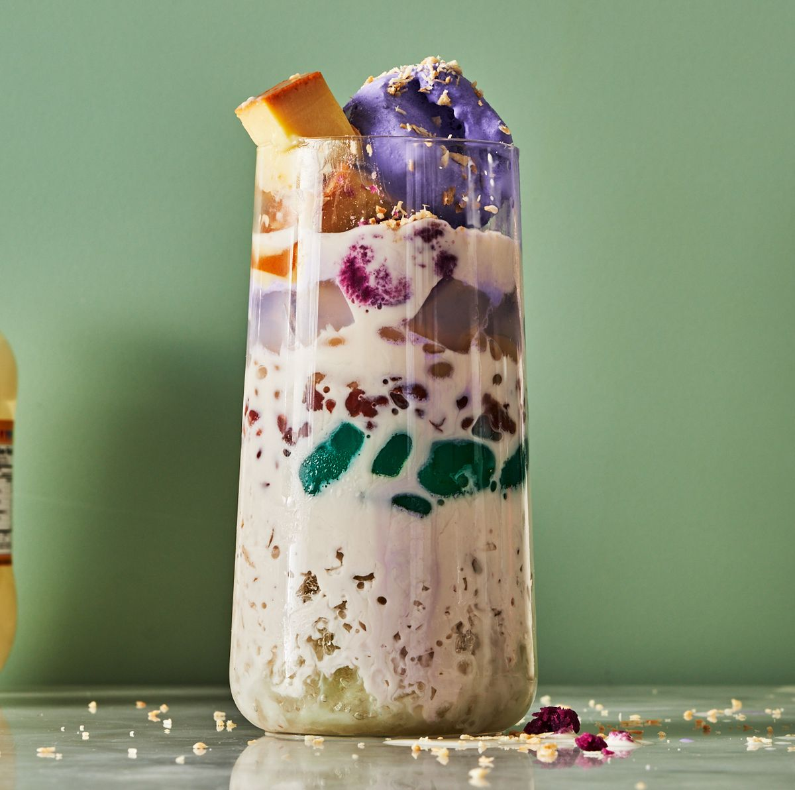

Halo-Halo

Halo-Halo is one of the favorite dessert and comfort food of Mamamayang Pilipino when weather is so hot.
- 1/4 cup sweetened red beans
- 1/4 cup sweetened white beans
- 4 cups shaved ice, from about 6 cups of ice cubes
- 1 large banana, thinly sliced
- 1/4 cup, drained jackfruit canned, sliced
- 1/4 cup macapuno strips, drained
- 1/4 cup nata de coco, drained
- 1/4 cup red palm seeds (Kaong), drained
- 1/4 cup green palm seeds (Kaong), drained
- 1 cup evaporated milk, divided
- 1/2 cup cap'n crunch with crunch berries cereal
- 2 scoops ube ice cream, store-bought or homemade
- Gather the ingredients and two tall parfait glasses.
- Place half the sweetened red and white beans at the bottom of each glass.
- Process about half the ice cubes in an ice shaver, blender, or food processor until it looks like snow. Then scoop about a half cup of the shaved ice on top of the beans.
- Add some banana and jackfruit slices, and top with another half cup of shaved ice. Add the macapuno strips and nata de coco.
- Process the other half of the ice cubes and add another half cup of shaved ice on top.
- Add the red and green palm seeds. Then add the final half cup of shaved ice to each glass, doming it slightly on top.
- Pour 1/2 cup evaporated milk on top of each parfait and top with a scoop of ube ice cream.
- Top with Cap'n Crunch cereal and enjoy immediately! Don't forget to halo-halo it with a long spoon!